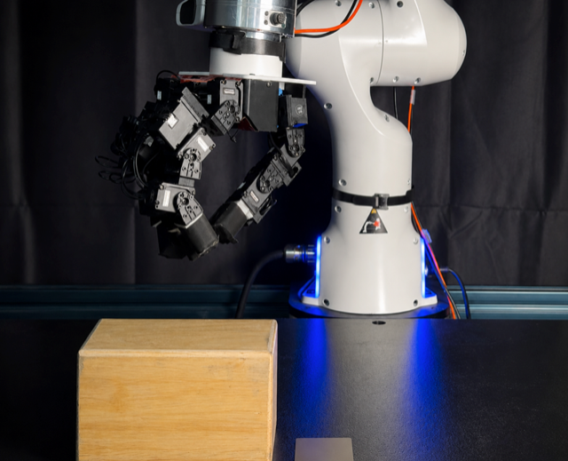
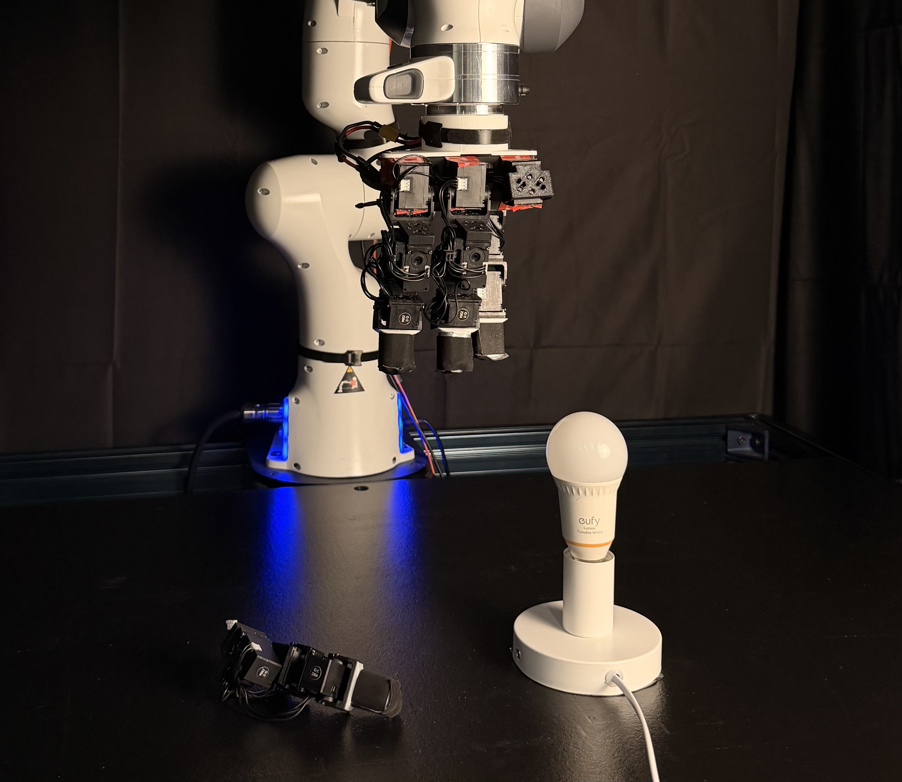

SCORE
Support-Constrained RL Enables Real-World Policy Improvement without Additional Real-World Experience
The Problem
Simulation can improve or break policies.
Policy improvement in simulation should be constrained to the support of the real-world base policy.
Method
We learn to steer the base policy in simulation, improving within its support.



Try it on any task
Watch a single policy go from real demonstrations, to steering in simulation, to deployment on the robot.
Beyond the Benchmark
SCORE handles more than the eight tasks.
Continuous operation
Running continuously, the policy picks up cubes one by one and drops them into the basket. The base policy misses most of them and leaves the basket nearly empty, while SCORE grasps reliably and fills it.
Fast to iterate on new tasks
Adding a new task is fast: under half a day from collecting demonstrations to deploying a SCORE policy. In both examples below, the base policy cannot recover once a grasp fails, while SCORE retries until it succeeds.
Why You Shouldn’t Optimize Freely in Simulation
It works in sim, then breaks on hardware.
With unconstrained RL, the policy maximizes reward by exploiting the simulator. The resulting grasps are contorted and high-force: they achieve high reward in simulation but become erratic or dangerous on the real robot.

Repeated at this force, these grasps eventually broke one of our hand’s fingers.
The Distributional Constraint Tradeoff
Constraining a policy toward the base trades improvement for transferability.
A common way to keep a simulation policy deployable is to regularize it toward the base policy with a behavior-cloning (BC) loss, but this introduces a tradeoff between improvement and deployment.
Too loose to learn anything: the policy collapses in simulation.
On real hardware
Even with the BC constraint in place, the policy settles on behavior that is unsafe or unreliable once deployed.
Flow Steering as Support-Constrained RL
SCORE optimizes for reward while staying within the support of realistic base-policy behaviors .
The support of πbase is the model-induced set of actions the base policy can produce for a given latent z. A support constraint keeps optimization within that set. Using flow steering, SCORE optimizes over z and climbs toward higher reward, but stays within the prior’s support, allowing for better sim-to-real transfer.
Behaviors in the support of the base policy can be transferred to the real world. Flow steering optimizes performance under the base policy's support, so the improvement found in simulation still holds on the robot.
How does the base policy affect improvement?
SCORE goes a long way, as long as the behavior lies in the support of the base policy.
One policy across tasks
One policy, trained with SCORE on three tasks: credit card, cube, and bottle. It picks the correct grasp for each object, and even learns to reuse behaviors across tasks.
The same cube is grasped two different ways: a credit-card pinch and a bottle grasp, both behaviors the policy learned on other objects. By reusing skills across tasks, one policy can still grasp the cube from placements outside its own training range.
The base policy swaps the two grasps: each object gets the grip meant for the other.
A new object: bottle → carrot
We take a frozen bottle-grasp policy and use SCORE in simulation to grasp a carrot, an object it never trained on. The carrot is thinner and needs a precise pinch that the bottle base policy produces only rarely.
What limits SCORE is the base policy itself. The broader its coverage, the further it can go.
Takeaway
Broader priors lead to better improvement.
Given a sparse reward function and half a day of training, SCORE learns fast, precise, and robust policies that transfer to the real world. This is made possible by constraining policy improvement to the support of the real-world prior. A natural next step is to build broader behavior priors and datasets designed for steering.
Appendix
Everything that did not fit in the eight page limit.
The submitted paper is capped at eight pages including references, so everything below lives here instead.
Read the Appendix 14 pages, PDF. Everything below, in full. →A Additional Results
- Per-task success and statistical significance
- Simulation success and sim-to-real transfer
- Does SCORE stay within the support?
- Robustness to dynamics mismatch
- Retry data without the residual
- Engineering effort
B Experiment Details
- Hardware and control setup
- Dexterous manipulation tasks
- Data collection
- Rewards
- Evaluation protocol
C Baseline Implementations
- FPO
- RialTo
- Residual RL
D Real-to-Sim-to-Real Pipeline
- Observation and action spaces
- Flow policy architecture and training
- Environment generation
- Domain randomization
- Asymmetric residual flow steering
- Deployment in the real world
E Qualitative Analysis
- Single-task improvement and failure modes
- Multi-task steering and behavior reuse